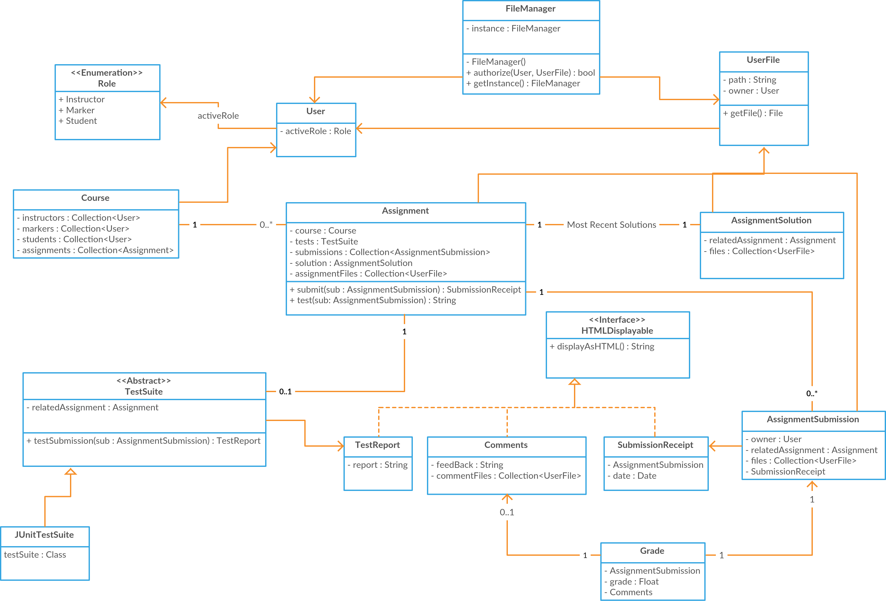
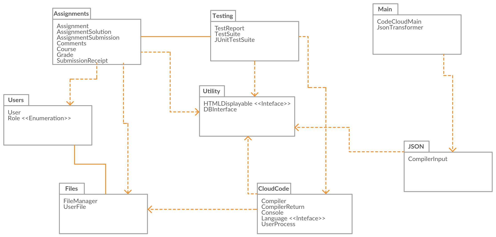

Software Architecture
Notes about design:
- There are two main, mostly decoupled, features of this system. There is the assignment and grading system which encompasses intructors, students, courses, etc. There is also the cloud-based code compiling and execution system. On the server these systems are quite decoupled but the client-side user interface will create the impression of a unified system.
- The Spark Java server framework uses a thread pool so every request is already handeled on separate threads. Therefore we do not have to worry overly about the amount of work done during each HTTP request.
- The Spark Java server framework can also serve static files very nicely and so we will use that, along with a backing UNIX file system to store all the user's files.
- To maintain an open connection between the client web browser and possible console applications running on the server we will launch all processes in new threads and store them in a singelton process manager called Console. These process threads will persist between HTTP requests and can be interacted with using polling AJAX requests.
Class Diagram for Assignment System

Class Diagram for Cloud-based Coding System
Package Structure
